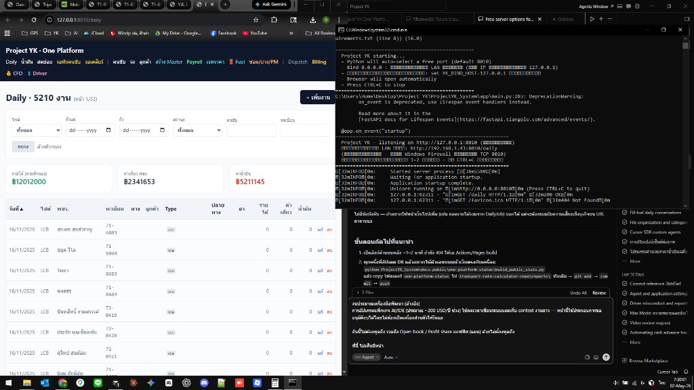

เป้าหมายระบบ
แพลตฟอร์มเดียวครอบคลุมงานสำนักงานและไซท์: Dispatch → รายวัน → สดย่อย → บิลลูกค้า → เงินเดือน → ซ่อมบำรุง → บัญชี/การเงิน → Dashboard ผู้บริหาร
ด้านล่างมี สถิติจริง จาก SQLite บนเครื่องพัฒนา (นับจำนวนแถว / ช่วงวันที่) — ไม่ส่งออกชื่อคน ทะเบียน หรือยอดเงินรายบรรทัด เพื่อความปลอดภัยบนลิงก์สาธารณะ
ข้อมูลจริงจากฐานข้อมูลระบบ (ตัวเลขรวม)
อัปเดตอัตโนมัติเมื่อรัน build_public_stats.py ก่อน deploy — ไฟล์ public-stats.json
หน้าระบบจริง (ตัวอย่างหน้า Daily)
ภาพด้านล่างคือสกรีนช็อตจากแอปที่รันบนเครื่อง (127.0.0.1 + FastAPI) — โครงเมนู การ์ดสรุป และตารางงานจริงตามที่ใช้งานในออฟฟิศ
ทำไมลิงก์ GitHub กดใช้แบบเดียวกับในรูปไม่ได้: GitHub Pages โฮสต์ได้เฉพาะไฟล์นิ่ง (HTML/CSS/รูป) — ไม่มี Python / ฐานข้อมูล / เซิร์ฟเวอร์หลังบ้าน ถ้าต้องการให้เปิดลิงก์แล้วกรองข้อมูลได้จริง ต้อง deploy แอปไปบริการที่รันเซิร์ฟเวอร์ (เช่น Render, Fly.io, VPS) แยกจาก Pages — บอกได้ถ้าต้องการให้ช่วยเตรียมขั้นตอน deploy

รูปบันทึกจากเครื่องพัฒนา — ใช้ประกอบให้เห็นหน้าตาระบบจริงเท่านั้น
สิ่งที่เปิดออนไลน์แล้ว (GitHub Pages)
ธุรกิจที่ระบบออกแบบรองรับ
AYU
รายเที่ยว + เหมาน้ำมัน
BIGC
เงินเดือน + ค่าเที่ยว + เรทน้ำมัน rebate
LCB
รายเที่ยว + เหมาน้ำมัน
แอป One Platform (พัฒนาในโปรเจกต์ภายใน)
สแตก: FastAPI + SQLite (พัฒนา) / HTMX + Tailwind — รันบนเครื่องหรือเซิร์ฟเวอร์ภายหลัง ไม่ใช่หน้า static นี้
ทำแล้ว (MVP+)
- Daily / Billing / Petty Cash / Payroll — ใช้งานได้ + ทดสอบเบื้องต้นผ่าน
- Maintenance — PM/RM/ยาง/สต็อก/ราคาซัพพลายเออร์/ตรวจรถ
- Fuel-adjusted pricing
- Import ข้อมูลรายวันและสดย่อยย้อนหลัง (โครงสร้างข้อมูล + สคริปต์)
- หน้า Finance — หนี้สิน งวดผ่อน Dashboard P&L Cashflow (กรอกข้อมูลผ่าน UI)
- Driver PWA คลื่นแรก — เข้าระบบ PIN, ตรวจรถ/แอลกอฮอล์, รูป+GPS, หน้าแอดมินตรวจงาน
ถัดไป
- ทดลอง PIN คนขับ 1–2 คนในงานจริง
- Driver — รูปงานต่อเที่ยว, OCR ใบเสร็จ/ตู้, ลายเซ็น, ดูรายได้จาก payroll
- Line OA (แผน)